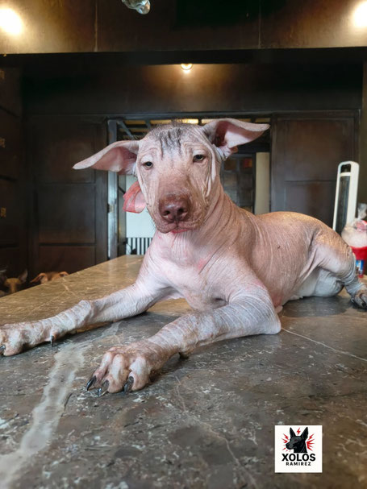

· Visual essay
The Xoloitzcuintli: A Living Pyramid and Guardian of Mexico’s Memory
Archaeology, worldview, biology, art and the careful progression from living lineage to complementary digital memory.
Guides about health, temperament, history, responsible adoption, and Xoloitzcuintli skin care from the Xolos Ramírez editorial team.

· Visual essay
Archaeology, worldview, biology, art and the careful progression from living lineage to complementary digital memory.
Compare the Miniature, Intermediate and Standard varieties with interactive charts and a household fit check.
Understand responsible raising, documented care, family guidance and destination-dependent logistics without public price lists.
Explore dentition, body condition, skin-related nutrients and general feeding questions to discuss with a veterinarian.
Review possible behavior tendencies, individual variation, socialization and questions for considering compatibility.
Use an interactive explanation to distinguish bare-skin warmth, internal temperature and cultural tradition.
Learn general ear anatomy, qualitative observation stages, evidence limits and common care myths.
Ancestral care for warrior skin" — A holistic journey through the unique dermatology of the Xoloitzcuintli.
The Xoloitzcuintli is more than a breed; it is a living artifact. Are you prepared to be the custodian of an ancient soul?
Ancient guides of the soul, living heaters, and Mexico's national treasure. Explore the fascinating world of one of the world's oldest and rarest dog breeds.
A practical pronunciation guide for the name of Mexico's ancient dog.
An introduction to the Xoloitzcuintli's history, character, and care.
Responsible ownership and practical considerations for international families.